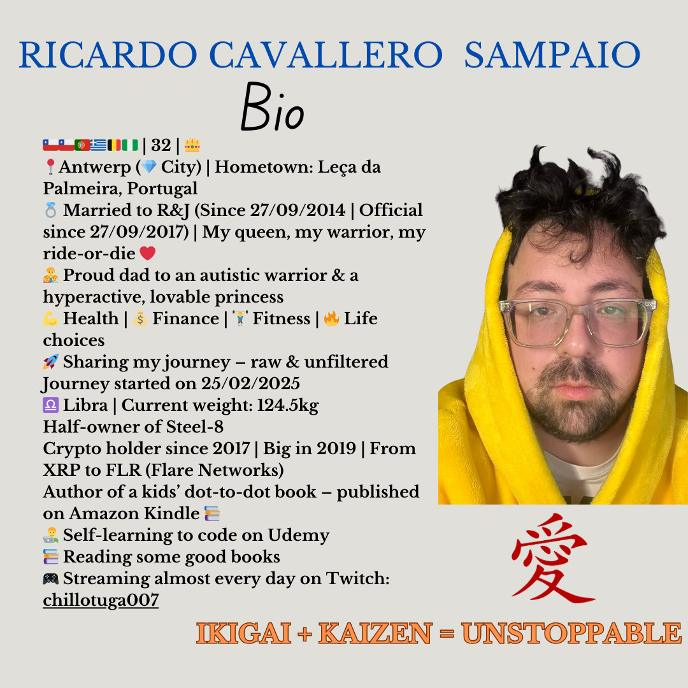

Ricardo Cavallero Sampaio

Summary
I am a hard worker who never gives up. I have an autistic child, and there’s no job on earth that prepares you for this kind of responsibility. Yet, he is a ray of sunshine in my life. I also love learning new things.
Education
- 2005- 2011 Tso 1ste tot 5de Engineering sciences Stella Maris
- 2012-2013 Tso 5 Sint-Elizabeth Pharmaceutical Technical assistant
- 2013-2015 Bso 5+6 Goldsmith T.N.A. Londenstraat
- Udemy Courses
Work Experience
- Internship place Bijorca / Anno 2014-2015
- Student job Sueno Latino / Anno 2014
- Job Sueno Latino. / Anno2015-2016
- Cotton nation through interim synergy Anno 2019
Skills
- Good communication skills
- Teamwork
- Problem-solving skills
- Adaptability
- Time management
- Leadership
- Flexibility
- Critical thinking
- Speak multiple languages: Dutch, Spanish, English Portuguese